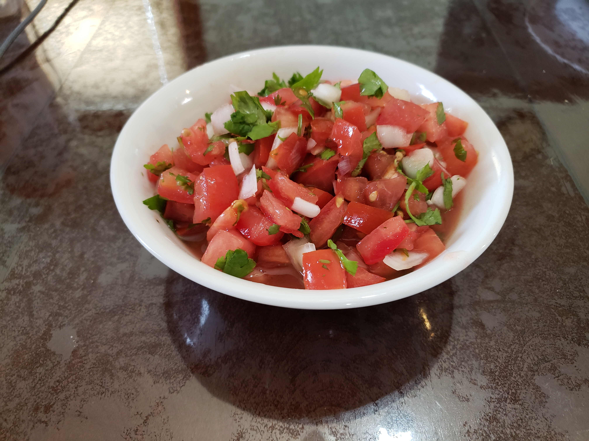

Pico de Gallo

Ingredients:
- 4 Large tomatoes or 8 Small tomatoes, finely diced
- 1 Small white onion, finely diced
- 1 Jalapeño or Serrano pepper, deseeded and finely diced
- 3/4 tsp Salt
- 2 Medium limes, juiced
- 1/2 cup or 1 bunch Cilantro, finely chopped
Instructions:
- In a medium serving bowl, combine the chopped onion, jalapeño, lime juice and salt. Let it marinate for about 5 minutes while you chop the tomatoes and cilantro.
- Add the chopped tomatoes and cilantro to the bowl and stir to combine. Taste and add more salt if needed.
- Let the mixture marinate for 15 minutes or several hours in the refrigerator. Serve as a dip, or with a slotted spoon or large serving fork to avoid transferring too much watery tomato juice with your pico.